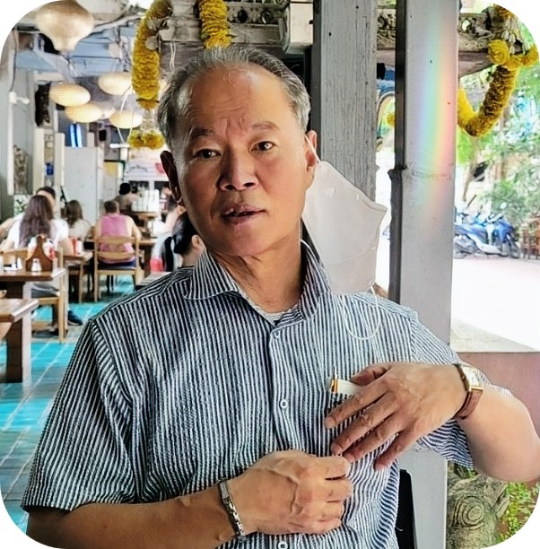
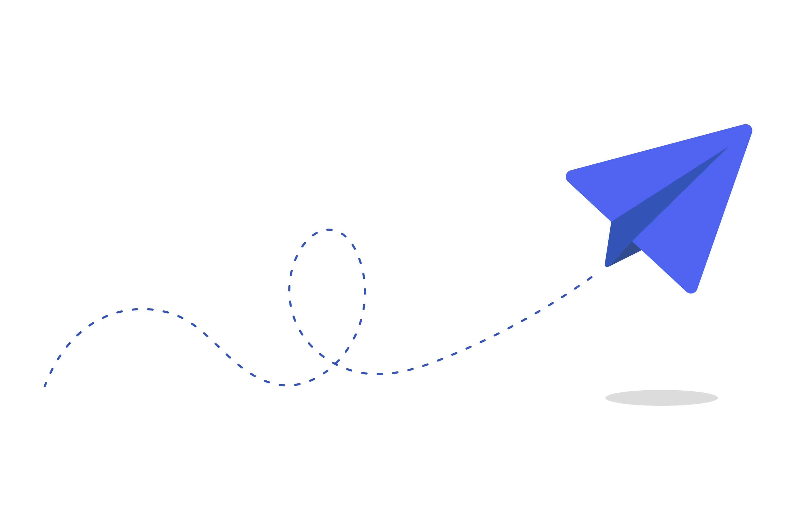

Welcome
Hello, I’m Sang Min Shim(Adrian).
I am an independent professional with experience in the regulation and supervision of Korea’s capital markets, as well as in the Primary Market. More recently, I have devoted my efforts to the non-commercial dissemination of open environmental technologies, drawing on the experience and perspectives I have gained over the years. This is a personal space where I quietly share my thoughts, my modest efforts to address global environmental challenges, and the stories that unfold along the way
About Me
I am a 65-year-old Korean who has spent many years consulting for Korean companies and working on a wide range of projects. About eight years ago, through this work, I became acquainted with a method known as Self-Sustained Oxidation Flow (SSOF), which enables the complete combustion of Synthetic Polymer Compound Waste (SPCW), including plastics. In January 2026, after confirming that the relevant Korean patent had lapsed, I began openly sharing SSOF technology for non-commercial use worldwide. I personally built and operated a chamber implementing SSOF, documenting the entire process and its results. I believe this approach can contribute to practical, field-based solutions for plastic waste treatment, particularly in developing countries.
Interests
I enjoy long journeys, quiet reflection, golf, and nature that remains largely untouched by human intervention. I seek the simplest possible life, with little desire to pursue anything for myself. Whenever the opportunity arises, I enjoy crossing vast continents by train or spending time among indigenous communities, sharing in their everyday lives. These days, I find particular pleasure in learning how to embrace what might be described, in literary terms, as “the slow journey home.”
Philosophy
I consider myself a shamanist, and I study and reinterpret Buddhist philosophy in my own way.
“Fix not thy heart on that which is transitory.”
— Henry David Thoreau, Walden (1854)
To me, this thought resonates deeply with Buddhist philosophy.
I belong to no particular religion, nor do I subscribe to any single philosophical doctrine.
This sense of independence is reflected in the name AZAD Research Group.
“AZAD” represents freedom and independence, while “Research Group” reflects an open space for individuals who may come together through shared curiosity, independent thought, and voluntary participation.
Professional Background
Drawing on my extensive experience in the capital markets, I have built specialized expertise within the environmental sector:
- Capital Markets(Mergers & Acquisitions, Initial Public Offerings, Tender Offers, etc)
- Identification and consulting for environment-related technology companies
- The implementation of regenerative capitalism, which aims to create a long-term sustainable and resilient economic system rather than pursuing financial gain.(IPOs)
ReFi is a term that combines DeFi—a concept representing blockchain-based finance—with the principles of regenerative economics; "regenerative capitalism" serves as the foundation for regenerative finance. The global plastic waste crisis can be viewed as a classic "coordination failure," stemming from the tragedy of the commons, misaligned incentives, and the dilemmas inherent in global cooperation. ReFi seeks to address these coordination challenges by leveraging the coordination mechanisms of Web3. Web3 mechanisms offer features such as decentralization, transparency, and immutability, as well as programmability and global accessibility. Various coordination mechanisms developed within the Web3 ecosystem—such as Proof of Work, Conviction Voting, and "Praise"—can be applied to diverse purposes, including fundraising, capital allocation, and governance voting.
Current Interests
I am interested in independent research and environmental technology, and I take part in open, non-commercial work through AZAD Research Group (AZADrg).
[Placeholder: describe in your own words what draws you to this work.]
This is my personal website. Views and notes here are my own and do not represent AZADrg. Official technical publications are released separately by AZADrg. [Add a link to the AZADrg site here.]
Thoughts & Notes

A collection of personal thoughts, experiences, and stories gathered along the way.
- Loading recent posts...